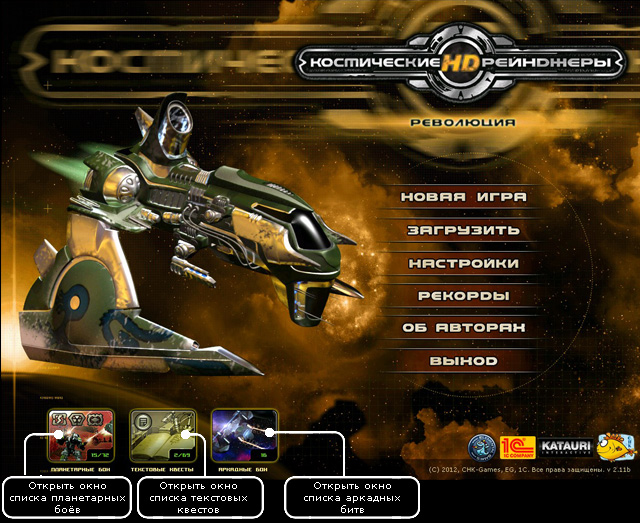

–уководство рейнджера > Ёкран главного меню
–уководство рейнджера > Ёкран главного меню
|
| Ёкран главного меню ѕосле запуска игры по€вл€етс€ экран главного меню, на котором вы видите название игры, номер версии (в левом нижнем углу) и кнопки главного меню: Х Ќова€ игра - начать новую игру. Х «агрузить - загрузить ранее сохраненную игру. Х Ќастройки - установить параметры игры дл€ достижени€ ее оптимальной производительности на вашем компьютере. Х –екорды - просмотреть свои результаты и сравнить их с эталонными значени€ми. Х ќб авторах - познакомитьс€ с теми, кто трудилс€ над созданием "–ейнджеров". Х ¬ыход - завершить игру и вернутьс€ в Windows. |
